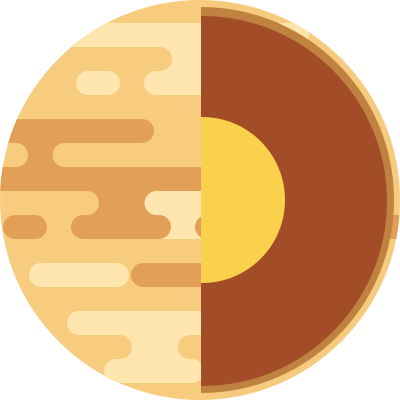
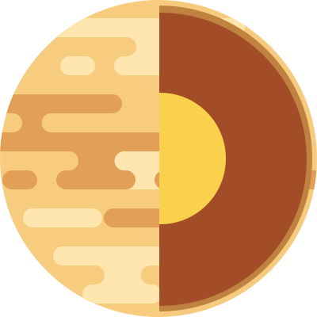

Venus
Venus is the second planet from the Sun. It is named after the Roman goddess of love and beauty. As the brightest natural object in Earth's night sky after the Moon, Venus can cast shadows and can be, on rare occasions, visible to the naked eye in broad daylight.
Venus The similarity in size and density between Venus and Earth suggests they share a similar internal structure: a core, mantle, and crust. Like that of Earth, Venusian core is most likely at least partially liquid because the two planets have been cooling at about the same rate.
Much of the Venusian surface appears to have been shaped by volcanic activity. Venus has several times as many volcanoes as Earth, and it has 167 large volcanoes that are over 100 km (60 mi) across. The only volcanic complex of this size on Earth is the Big Island of Hawaii.
Source :
Wikipedia